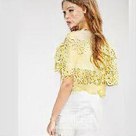

Unsupervised Person Image Synthesis in Arbitrary Poses

Given an original image of a person (left) and a desired body pose defined by a 2D skeleton (bottom-row), our model generates new photo-realistic images of the person under that pose (top-row). The main contribution of our work is to train this generative model with unlabeled data.

The proposed architecture consists of four main components: (1) A generator $G(I|\mathbf{p})$ that acts as a differentiable render mapping one input image of a given person under a specific pose to an output image of the same person under a different pose. Note that $G$ is used twice in our network, first to map the input image $I_{p_o}\rightarrow I_{p_f}$ and then to render the latter back to the original pose $I_{p_f}\rightarrow \hat{I}_{p_o}$; (2) A regressor $\Phi$ responsible of estimating the 2D joint locations of a given image; (3) A discriminator $D_{\text{I}}(I)$ that seeks to discriminate between generated and real samples; (4) A loss function, computed without ground truth, that aims to preserve the person identity. For this purpose, we devise a novel loss function that enforces semantic content similarity of $I_{p_o}$ and $\hat{I}_{p_o}$, and style similarity between $I_{p_o}$ and $I_{p_f}$.

BibTex
@inproceedings{pumarola2018unsupervised,
title={{Unsupervised Person Image Synthesis in Arbitrary Poses}},
author={A. Pumarola and A. Agudo and A. Sanfeliu and F. Moreno-Noguer},
booktitle={CVPR},
year={2018}
}
Publications
2018
-

- Unsupervised Person Image Synthesis in Arbitrary Poses
- A. Pumarola, A. Agudo, A. Sanfeliu and F. Moreno-Noguer
- Conference in Computer Vision and Pattern Recognition (CVPR), 2018.
- Spotlight
-
We present a novel approach for synthesizing photo-realistic images of people in arbitrary poses using generative adversarial learning. Given an input image of a person and a desired pose represented by a 2D skeleton, our model renders the image of the same person under the new pose, synthesizing novel views of the parts visible in the input image and hallucinating those that are not seen. This problem has recently been addressed in a supervised manner, i.e., during training the ground truth images under the new poses are given to the network. We go beyond these approaches by proposing a fully unsupervised strategy. We tackle this challenging scenario by splitting the problem into two principal subtasks. First, we consider a pose conditioned bidirectional generator that maps back the initially rendered image to the original pose, hence being directly comparable to the input image without the need to resort to any training image. Second, we devise a novel loss function that incorporates content and style terms, and aims at producing images of high perceptual quality. Extensive experiments conducted on the DeepFashion dataset demonstrate that the images rendered by our model are very close in appearance to those obtained by fully supervised approaches.
@inproceedings{pumarola2018unsupervised,
title={{Unsupervised Person Image Synthesis in Arbitrary Poses}},
author={A. Pumarola and A. Agudo and A. Sanfeliu and F. Moreno-Noguer},
booktitle={CVPR},
year={2018}
}
Acknowledgments
This work has been partially supported by the Spanish Ministry of Science and Innovation under projects HuMoUR TIN2017-90086-R and ColRobTransp DPI2016-78957; by the European project AEROARMS (H2020-ICT-2014-1-644271); by a Google faculty award; and by the Spanish State Research Agency through the Mar\'ia de Maeztu Seal of Excellence to IRI MDM-2016-0656.